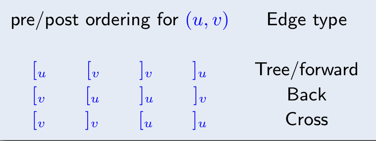

Overview¶
图并不能简单理解为一个和 stack, queue, list, tree 并列的数据结构。
图是一种表达能力非常强的数学语言，它能描述一个非欧空间，跟它对标的应该是代数或者几何。
但是也应该注意到，图论并不是一种算法方法论，在图论算法中，你可以看到有贪心、动态规划、线性规划和近似算法等方法。
DFS¶
不止一次递归¶
DFS 并不是只执行一次递归就可以了，因为一个图并不一定是一个联通分量，所以可能一次递归结束以后，还需要在进行多次递归，直至所有的点都被遍历到。
但是无论多少次遍历，DFS 都需要遍历每个节点和与之相连的每条边，所以时间复杂度最小是\(O(V + E)\) （使用邻接表实现），用邻接矩阵实现则会变成\(O(V^{2})\) 。同样的 BFS 也是。
Previsit & Postvisit¶
概念本身非常好懂，都是 vertex 的属性，一个是第一次遍历此 vertex 的时间，一个是遍历玩 vertex 所有后继的时间。
关键是它的应用，基本上有两个：
- 作为判断 edge 类型的依据，对于一个边 \(e = (u, v)\) ，我们可以根据 range
pre[u] ~ post[u]与 rangepre[v] ~ post[v]来判断 edge 是不是后向边。进一步，而向边有可以用于判断图中 是否有环路 。更进一步，如果一个有向图中无环，那么他就是 DAG 图 - 在无环的情况下，根据
post数组对节点进行逆序排序，我们就可以得到一个 拓扑序 ，而拓扑序是一种描述图结构的强大表达方式。更进一步，这也可以作为判断 SCC 算法的 sink vertex 的依据。直观来说，某个节点的post值越大，它就越可能是一个 source 。
Edge Type¶
对于有向图来说，一共有四种边：

需要强调的是，Edge Type 的关键是确实有一个 edge ，我们不能随便拿两个之间都没有边连接的节点\(u, v\) 来判断他们是不是有一个后向边。
所有边的类型中，我们最关注后向边，因为有定理：
一个有向图中有环，当且仅当图中有后向边。
还有一个有趣的事情，就是边的类型是与特定 DFS 绑定的，可能某个边在某次 DFS 中是一个后向边，而再另一次 DFS 中，就变成树边了。但是“有没有环”却是一个静态性质。
图的分解¶
我们可以使用迭代 DFS 的方式来确定图中的强连通分量（Strongly Connected Components）。
我们可以将图理解成一个有两个层次的结构：底层是一个个的 SCC ，而上层是由这些 SCC 为节点构成的 DAG 。
正因为上层是一个 DAG ，所以有两类特殊的 SCC ，source SCC 和 sink SCC ，它们有如下非常显然的性质：
- 我们对一张图执行 DFS ，得到的
post最大的节点，一定在 source SCC 中。 - 我们对 sink SCC 中任意节点执行一次 DFS 递归（仅一次），那么遍历到的所有节点的集合就是 sink SCC 本身。
根据这两个性质，我们就可以构造出 SCC 算法。
- 首先我们将图反转过来，然后执行 DFS 获得 source SCC （这就是原图的 sink SCC）中的一个点
- 然后对着这个点执行 DFS ，就获得一个 sink SCC
- 将 sink SCC 删掉，然后再执行整个流程（本质是在反转图的高层按拓扑排序执行）
MST¶
Overview¶
MST(Minimum Spanning Tree) 的本质是一个边集。Kruskal 和 Prim 都是无向图上的算法。
Cut & CutSet¶
之所以要先介绍割（Cut）和割集（CutSet）的概念，是因为这些概念会影响后面 MST 算法的证明。
Cut 指的是将图 \(G = (V, E)\) 上的节点集合 \(V\) 分割成 \(S\) 和 \(V-S\) 两个部分，而 Cut Set 指的是一组边的集合 \(X \subset E\) ，有 \(X\) 中的每条边，它们的一个端点在 \(S\) 中，而另一个端点在 \(V - S\) 中。直观上说，就是 \(X\) 是连接 \(S\) 和 \(V-S\) 的桥梁。
分割与 MST 的关系是，如果边集 \(T'\) 是某个最小生成树 \(T\) 的一部分，那么某个分割 \(S\) ，如果满足\(T'\) 中没有横跨 \(S\) 和 \(V - S\) 的边，那么这个分割对应的 CutSet 中权值最小的边 \(e\) ，满足 \(X \cup {e}\) 也属于某个最小生成树（不一定是 \(T\) ）。
分割的这个性质，让我们找到了一种 贪心的、可迭代 的“让 MST 持续生长”的方式。
Kruskal¶
Kruskal 算法从全局视角来构建 MST。它从最小权重的边开始，将边添加到生成树中，以确保不会形成环，直到树含有所有顶点。
通常使用并查集（Disjoint Set Union，DSU）来管理森林，快速判断和合并树。时间复杂度为 \(O(E \log E + E)\) 。
Prim¶
Prim 算法从局部视角构建 MST。它从任意一个起始顶点开始，逐步将连接的未访问顶点添加到生成树中。类似于 Dijkstra 算法。
通常使用优先队列（如堆）来选择当前最小权重的边。时间复杂度为 \(O(E \log V)\) 。
因为 Kruskal 需要对边进行排序，所以相比于 Prim 对于稀疏图（边少）效果更好，而在稠密图上表现较差。
最短路径¶
Overview¶
最短路径不止有 Dijkstra 一种算法，根据图的不同有不同的算法。
边均为 1 的图¶
这种图可以直接用 BFS 即可。
只正边图¶
使用 Dijkstra 算法。Dijkstra 算法其实可以规约到 BFS 上，将长度大于 1 的边（比如说 3），那么就引入多个中间节点（2 个），这就就会变成 BFS 算法。而且你会发现这种 BFS 稍加化简就会变成 Dijkstra 。
此外 Dijkstra 还有一个解释，就是我们的本质是在维护一个“已经确定最短路径的点的集合”，我们称之为\(S\) 。最开始的时候这个集合中只有起始点，每次我们挑选出“最短路径”的时候，本质是将这个最短路径的“终点”加入\(S\) 的过程，换句话说，这个点的最短路径已经被确定了，以后无论怎么变化，都不会影响原点到这个点的最大路径大小了。
这么一说似乎有些反直觉，因为我们会觉得有这种情况“虽然现在看着我们直接离这个点挺远的，但是我们只要用一个很小的代价先到某个中间节点去，然后那个中间节点又恰好离这个点很近，那么不就不能现在就确定吗？”。举个例子：
第一次迭代，\(A\) 是那个“确定”的点，此时\(B\) 还离我们很远：
| A | B | C |
|---|---|---|
| 2 | 100 | 3 |
第二次迭代，\(C\) 被确定，此时更新\(B\) ，发现\(B\) 经过\(C\) 的中转，变得进了：
| A | B | C |
|---|---|---|
| 2 | 4 | 3 |
看上去\(B\) 似乎符合了我们的认知，就是它被一个中间节点\(B\) 给更新了，缩小了整整 25 倍。那么我们考虑，\(C\) 能不能更新\(A\) ，让从原点到\(A\) 的路径也变得更小呢？不幸的是，并不可能，因为在只有正向边的图上，经过\(C\) 到\(A\) 一定比直接到\(C\) 的路径要长，而在第一轮迭代中，我们就知道了现在到\(A\) 的路径已经比到\(C\) 的短了。
Dijkstra 的算法就是迭代\(V\) 次，每次挑选出最小的值对应的点，并且根据这个点更新其他路径。如果用优先队列实现，那么我们在初始化的时候，需要将所有的节点都插入优先队列，那么就是\(V\) 次，而后面更新路径，如果每条边都会更新路径，那么我们需要插入优先队列\(E\) 次。优先队列的每个操作的复杂度都是\(O(\log V)\) ，所以最终的时间复杂度是\(O((V + E) \log V)\)
含负边图¶
处理含有负边的图的时候，Dijkstra 算法就不再适用，我们需要用 Bellman-Ford 算法。图上可以有环，但是不能有负权重环。
所以为什么 Dijkstra 会不适用？回看我们对于 Dijkstra 的解释，就会发现它更新边，依赖于“边是正的”这个特点（不然在上面的例子中，真的有可能从\(C\) 到\(A\) 比直接到\(A\) 要近）。
那么我们该怎么办，其实都还好，那么就是我们原来是根据当前点更新那些没有被确定的点的路径，现在我们更新所有点的最短路径，这样就没有问题了。
此时的算法复杂度为\(O(VE)\) 。
负权重环可以被很容易探测出来（具体算法我记不清了）。
DAG¶
我们可以对着 DAG 生成一个拓扑序，然后按照拓扑序遍历节点，并对当前访问的顶点出发的边执行更新操作。
这个算法并不要求边是正数。
我们也可以让边的值取负值，这样我们就可以求最长路径了。
所有顶点间的最短路径¶
我们解决这个问题使用基于 DP 的 Floyd-Warshall 算法。
其中状态设计为\(dist(i, j, k)\) 为仅仅允许使用\({1, 2, \cdots, k}\) 作为中间节点的时候，\(i\) 到\(j\) 的最短路径长度。
状态转移方程为：
dist(i, j, k) = \min(dist(i, k, k - 1) + dist(k, j, k - 1), dist(i, j, k - 1))
最大流最小割问题¶
Overview¶
最大流最小割问题可以被处理成一个 Linear Programming 问题。最大流问题是一个求解最大值的问题，而最小割问题是最大流的对偶问题。
我们研究这个问题的时候，不能用简单的“加权边”进行建模了，实际上每个边\(e\) 有两个属性，分别是“流量\(f(e)\) ”和“容量\(c(e)\) ”。
最小割指的是容量 CutSet 的最小值。而不是流量 CutSet 的最小值。
当最大流问题取到最值的时候，恰好最小割也取到最值，有“最大流等于最小割”。而在没有取到最值的情况，则是“最大流一定小于最小割”。这就是最大流最小割问题。如果从直观上理解，那么就是一个图上最大的流量，是被最小的容量割所限制的。
Ford-Fulkerson¶
这是一种求解最大流问题的算法。它的思想非常简单，就是“尽可能”地找到可以增加流量的方法，然后增加流。
为了描述算法，我们先引入增广路径（Augmenting Path）的概念。它指的是在某个流图上一个从源点到汇点的路径，而且自身还有一定的流量（要不超过容量限制）。显然增广路径就是我们逐渐增大流量的抓手，我们最后的流量图，就可以视为一条条增广路径的叠加。设计的算法，就是一次次搜索出增广路径，然后更新容量（相当于将流从图上删去），直至再也找不到一个增广路径的时候就停止。
但是不幸的是，我们并不能在原图上直接进行这个算法，因为这可能会导致增广路径因为“先来后到”而达不到最优值，所以我们要允许“流量的撤销”。
因此我们实际进行算法的图被称作残差图（Residual Graph），这个图在一开始是仅有容量性质的原图，我们每在原图的某条边\((u, v)\) 上增加一些流量，都需要更新残差图：
- 减少\((u, v)\) 的值：相当于使用掉了一部分容量
- 增加\((v, u)\) 的值：创举，相当于允许之后这部分流量再次撤销。
那么这种算法的时间复杂度是多少呢？这个算法可以分为两个部分：
- 搜索出一条增广路径
- 重复迭代搜索，直至找不出任何一条增广路径。
搜索增广路径可以使用 DFS 和 BFS ，那么时间复杂度都是 \(O(V + E)\) ，我不知道为啥，似乎在这个算法分析中，常常会被记作 \(O(E)\) ，虽然有道理，但是我并不觉得这里有什么特殊的。
那么我们会迭代多少次呢？如果我们使用 DFS ，那么我们最差会迭代 \(C\) 次，其中 \(CE\) 是所有边中最大的容量，也就是一点点（1 step）增加这个最大容量，那么整体的时间复杂度就是 \(O(CE^{2})\) 。这样就退化成了一个伪多项式时间算法了，显然是我们不能接受的。
幸运的是，如果我们使用 BFS ，那么迭代次数不会超过 \(O(VE)\) ，所以总的时间复杂度是 \(O(VE^{2})\) 。
为什么 BFS 的迭代次数不会超过 \(O(VE)\) 呢？这是因为我们观察到 BFS 会选出当前残差图上的最浅路径。此外需要强调一下，这里的“最浅”指的是“深度最小”而不是“路径长度最小”，如果真的是最短路径长度，那么应该用 Dijkstra 算法了。而在不同次迭代中，人们发现每次的最浅的深度都在增加，而从源点到汇点的深度是有限的，所以最终效果就是只需要迭代有限次数。
最大流最小割¶
我们现在已经知道了“最大流等于最小割”的事实，我们继续讨论一下当我们取到最大流的时候，最小割是啥？
其实非常直观，当我们取到最大流的时候，就说明源点和汇点之间不再存在增广路径（实际上就是不存在路径了），那么我们从源点进行一次搜索，所有被搜索到的节点构成的集合 \(S\) ，与剩余的节点 \(V -S\) 之间的割，就是最小割，这也非常自然。
Partition & Matching¶
Matching¶
Matching 是一个边集，这个图上的所有顶点，都只会与这个边集里面的每个边最多有一次关系。直观来说，就是不能有一个顶点，有 Matching 的多条边连在他上面。只能有一条边、或者完全没有边连在上面。
叫作 Matching （匹配），也就是所有被这个边集联系起来的顶点，都是一对一的。
所谓的完美匹配（perfect matching），指的是这个边集所涉及的所有顶点，刚好就是图上的所有顶点。也就是说，这个图上的所有顶点都可以一一对应。
Bipartition¶
二部图（Bipartition）是一种特殊的图，它的顶点分为 \(L\) 和 \(R\) 两个部分，所有的边，有一端在 \(L\) ，另一端在 \(R\) 。
二部图和匹配关系和密切，但是也是完全对应的。在非二分图上也可以有匹配的概念（可以考虑成原本的二分图中，\(L\) 内节点之间可以有边）。我们之所以研究二分图上的匹配，是因为它可以被规约成一个最大流问题。
为了将其规约成最大流问题，我们可以添加一个虚拟源点，用容量为 1 的边连接 \(L\) 中所有的点，再添加一个汇点，用容量为 1 的边连接 \(R\) 中所有的点。这样就可以使用最大流算法来求匹配了。
这样求出来的匹配，是一个最大的匹配（也就是匹配中的边的数目最多），但是不一定是完美匹配。
Hall’s Marriage Theorem¶
Hall’s Marriage Theorem（霍尔婚嫁定理）：所有男生都能成功配对的充要条件是：任意选出 \(k\) 个男生，他们合起来认识的总女生数必须 \(\ge k\) 。
形式化的表述是：任意 \(l \subset L\) ，有 \(N(l) \geq |l|\) 。其中 \(N(l)\) 是 \(l\) 的邻居。则满足完美匹配。
对偶性 – König 定理¶
既然二部图上的最大匹配问题可以被规约到最大流问题，那么这个问题是不是也像最大流问题一样，有一个直观的对偶问题呢？
还真有，这就是最小点覆盖问题，也就是最少用多少个点，就可以覆盖二部图上的所有边？根据 König 定理，有：在二部图上，最大匹配等于最小点覆盖。